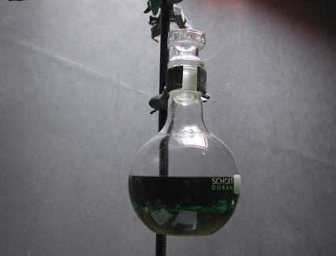
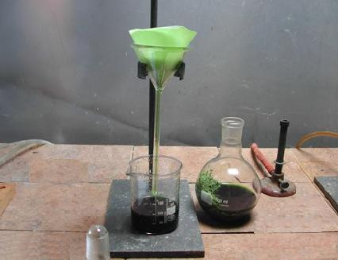
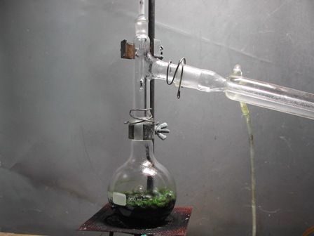
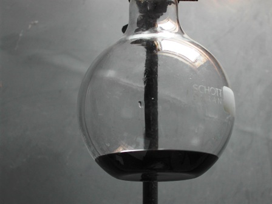
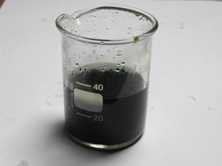

Mi piacciono le piante in generale, figuriamoci se non amo qualsiasi vegetale che mi produce, gratis per sintesi interna, una interessante sostanza chimica con la sua bella formulaccia!
Che sia velenosa come la fava di Sant'Ignazio o dolce come la stevia, non importa: per quanto mi riguarda le ringrazio entrambe.
A proposito di stevia, all'inizio della scorsa primavera me ne sono messa nell'orto una pianticella, per sentire poi che gusto avrebbe avuto lo stevioside.
Attenzione: NON l'ho piantata perchè è di moda (di solito tendo sempre a fare proprio il contrario delle cose "di moda") ma con lo stesso spirito col quale avevo coltivato con cura lo stramonio... e credo che tanto basti per capirci.
La stevia da un po' di tempo è diventata di moda a causa dell'imperante mania delle ipocalorie (manie televisive dell'acqua fresca) e si trova adesso in internet in tutte le salse... pardon, pillole, bustine o estratti, fate vobis.
[Per essere pignoli, che abbia poi "zero" calorie come viene detto commercialmente è una emerita panzana, perchè nessuna sostanza organica ossidabile ha "zero" calorie alla combustione: semplicemente il suo potere calorico è trascurabile perchè essendo molto dolce se ne usa pochissima].
Si capisce che non posso fare a meno di piazzare qui il quadretto dello steviolo, il protagonista dolce che il glicoside ci fornisce. Guarda che bello:

Della stevia si sa ormai, grazie a San Google, vita morte e miracoli: che è molto dolce, che arriva dal Paraguay, eccetera, eccetera, come al solito non mi soffermo su ciò.
Dicevo dunque che volevo assaggiare di persona lo stevioside e così dopo che la pianticella si è ben sviluppata durante l'estate l'ho potata senza pietà finchè mi ha fornito un bel po' di foglioline, diventate una ventina di grammi una volta ben essiccate all'ombra.
Per l'estrazione del principio attivo ho posto le foglioline secche ben sminuzzate in 250 ml di etanolo ed ho lasciato digerire per una decina di giorni in posto fresco, mescolando di quando in quando.

Alla fine ho filtrato, ottenendo un liquido limpido verde scurissimo per l'abbondanza di clorofilla.

Ho posto il liquido in un pallone da 500 ml ed ho recuperato per distillazione la maggior parte dell'etanolo.

La temperatura sale ovviamente fino a 78° (temp. di ebollizione del C2H5-OH) e si mantiene costante durante quasi tutta l'operazione; alla fine, essendoci un residuo di fase acquosa, la temperatura tende a salire ma ho interrotto la distillazione a 85° volendo tenere la temperatura più bassa possibile per non "cuocere" il prodotto.
Non ho quindi bollito il residuo fino a concentrarlo in un caramello (come si legge da qualche parte in rete!), ma mi sono fermato quando erano rimasti nel pallone circa 35 ml di residuo, sempre di colore verde scurissimo e con lo stevioside e le altre sostanze il più possibile non alterate da eccessivo riscaldamento.

Ora il prodotto ottenuto, che è ancora appena appena alcolico, è pronto per essere assaggiato, puro o diluito.
Visto così sembra nero ma in realtà è verde scuro.

Assaggiarlo puro ha poco senso perchè di sapore dolce troppo intenso; diluendone invece qualche goccia in un bicchiere d'acqua se ne può apprezzare esattamente il sapore e soprattutto il persintentissimo retrogusto, simile alla liquerizia.
A questo punto ognuno ne faccia quello che vuole e consideri, con soddisfazione se quello è lo scopo, che qualche goccia di questo estratto renderanno dolce il tè delle cinque diciamo pure con "zero" calorie...